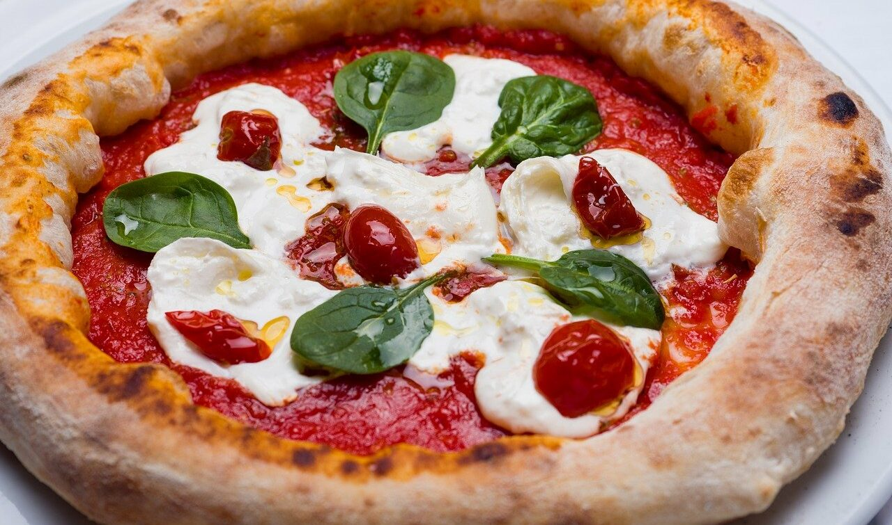
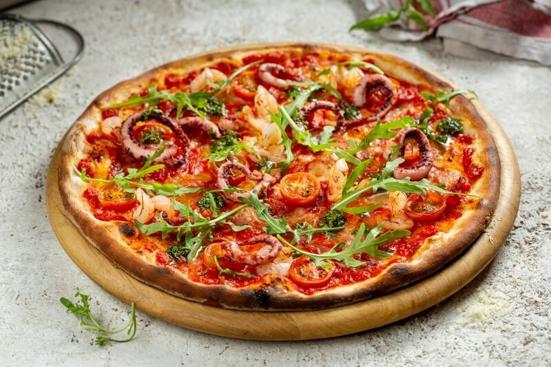
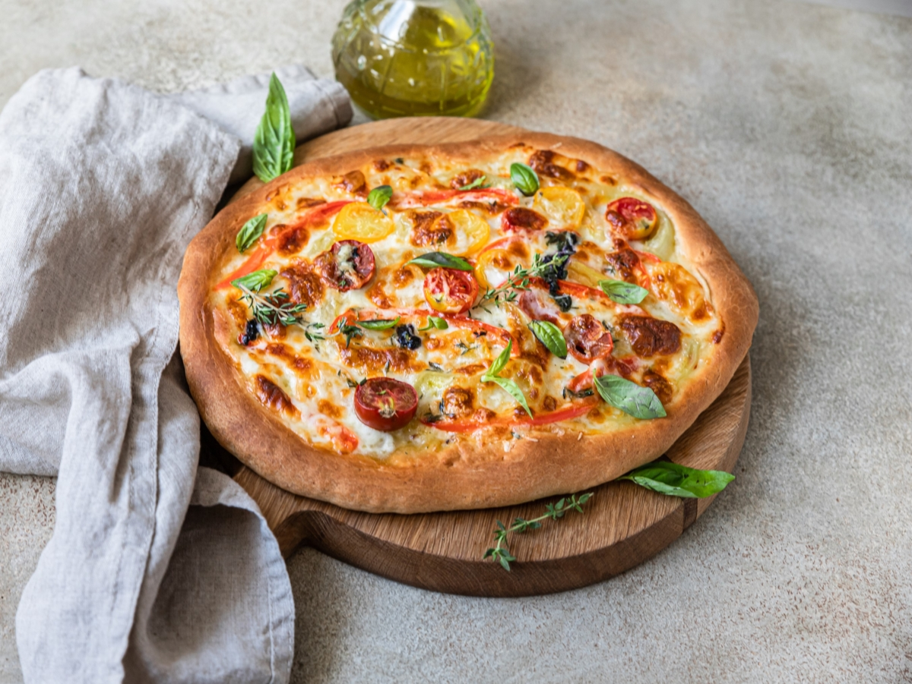
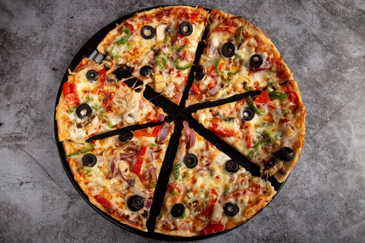

Неаполитанская пицца

Неаполитанская пицца, также известная как пицца в неаполитанском стиле, представляет собой пиццу, приготовленную из помидоров и сыра моцарелла. Помидоры должны быть либо помидорами Сан-Марцано, либо Помодорино-дель-Пьенноло-дель-Везувио, которые растут на вулканических равнинах к югу от горы Везувий.
Маринара

Пицца маринара, также известная как пицца алла маринара, представляет собой разновидность пиццы в неаполитанской кухне, приправленную только томатным соусом, оливковым маслом первого отжима, орегано и чесноком. Предположительно, это самая старая пицца с помидорами.
Римская пицца

Римская пицца, в отличии от любой другой, имеет овальную форму. Это пошло со времен, когда жители Рима делали лепешку из пшеничной муки - фокаччу. Само тесто тоже имеет некоторые нюансы: выстаивается на бигге (смесь муки, воды и дрожжей), примерно от 24 до 48 часов.
Сицилийская пицца

Сицилийская пицца — это пицца, приготовленная способом, который зародился на Сицилии, Италия. Сицилийская пицца также известна как sfincione или фокачча с начинкой. Этот тип пиццы стал популярным блюдом на западе Сицилии к середине 19 века и был типом пиццы, которую обычно употребляли на Сицилии до 1860-х годов.